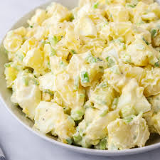

Potato Salad

Description
Potato salad is a classic and versatile side dish that is perfect for picnics, barbecues, and family gatherings.
It typically consists of boiled potatoes mixed with a creamy dressing, often made from mayonnaise and mustard, along with various add-ins like chopped eggs, celery, red onion, and pickles.
The salad is seasoned with salt, pepper, and sometimes herbs like parsley, and it's best served chilled to allow the flavors to meld together.
This comforting dish is loved for its creamy texture and delicious blend of flavors.
Ingredients
- 2 pounds (about 900 grams) potatoes (Yukon Gold or Russet)
- 3 large eggs
- 1 cup mayonnaise
- 2 tablespoons Dijon mustard
- 2 tablespoons apple cider vinegar
- 1 teaspoon salt
- 1/2 teaspoon black pepper
- 1/2 cup chopped celery
- 1/2 cup chopped red onion
- 1/4 cup chopped dill pickles (optional)
- 2 tablespoons chopped fresh parsley (optional)
- 2 Paprika for garnish (optional)
Steps
- Prepare the Potatoes
- Cook the Potatoes
- Boil the Eggs
- Drain and Cool Potatoes
- Peel and Chop Eggs
- Prepare the Dressing
- Mix the Salad
- Add Final Touches
- Chill and Serve